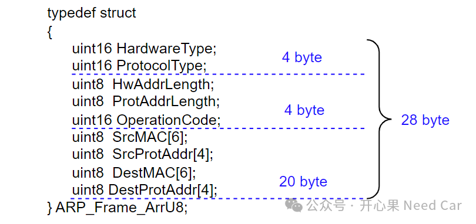
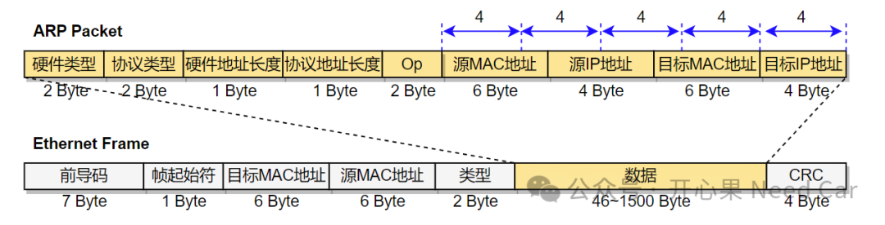
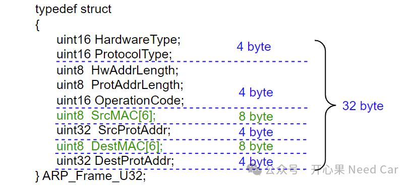
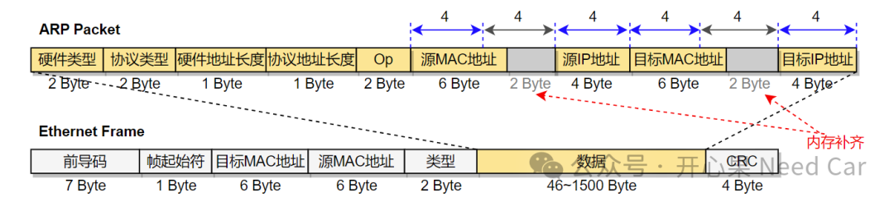

开心果 Need Car · 2024-06-16T09:45:00+08:00 · 微信原文
如标题，在定义变量时，使用uint32 Argu和uint8 Argu[4]的效果一样吗？本文，围绕这个点，展开细聊。
1、uint32 Argu和uint8 Argu[4]在结构体中的影响
项目开发中，程序中有大量的数据对象（Object）定义，在C语言中，描述一个数据对象，最常用的结构就是struct。围绕着数据对象功能，我们会设计不同长度的数据元素（element），eg：ARP Frame。本文用两种struct形式描述ARP Frame，如下所示：
描述方式 一
/* ARP Frame */typedef struct{uint16 HardwareType;uint16 ProtocolType;uint8 HwAddrLength;uint8 ProtAddrLength;uint16 OperationCode;uint8 SrcMAC[6]; /* source MAC address */uint8 SrcProtAddr[4];uint8 DestMAC[6]; /* destination MAC address */uint8 DestProtAddr[4];} ARP_Frame_ArrU8;
描述方式 二
typedef struct{uint16 HardwareType;uint16 ProtocolType;uint8 HwAddrLength;uint8 ProtAddrLength;uint16 OperationCode;uint8 SrcMAC[6]; /* source MAC address */uint32 SrcProtAddr;uint8 DestMAC[6]; /* destination MAC address */uint32 DestProtAddr;} ARP_Frame_U32;
#include <stdio.h>typedef unsigned char uint8;typedef unsigned short uint16;typedef unsigned int uint32;/* ARP Frame */typedef struct{uint16 HardwareType;uint16 ProtocolType;uint8 HwAddrLength;uint8 ProtAddrLength;uint16 OperationCode;uint8 SrcMAC[6]; /* source MAC address */uint8 SrcProtAddr[4];uint8 DestMAC[6]; /* destination MAC address */uint8 DestProtAddr[4];} ARP_Frame_ArrU8;typedef struct{uint16 HardwareType;uint16 ProtocolType;uint8 HwAddrLength;uint8 ProtAddrLength;uint16 OperationCode;uint8 SrcMAC[6]; /* source MAC address */uint32 SrcProtAddr;uint8 DestMAC[6]; /* destination MAC address */uint32 DestProtAddr;} ARP_Frame_U32;int main(){printf("ARP_Frame_ArrU8 Size = %d, ARP_Frame_U32 Size = %d.\n",\sizeof(ARP_Frame_ArrU8),sizeof(ARP_Frame_U32));return 0;}
ARP_Frame_ArrU8 Size = 28, ARP_Frame_U32 Size = 32.

ARP_Frame_U32占用32 byte的内存排布如下所示：

对应ARP报文的内存排布如下所示：

之所以ARP_Frame_U32多占用4 byte，是因为uint8 SrcMAC[6]和uint8 DestMAC[6]需要对齐，两者均自动添加了2个byte用于对齐（4 byte对齐），由于自动对齐破坏了ARP的协议规则，这将会导致ARP通信问题。
ARP_Frame_ArrU8和ARP_Frame_U32会有什么影响呢？
我们知道，任何协议的制定，都会约束协议格式，也就是说：一定条件下，Frame的长度固定长度，即：ARP报文长度固定28 bytes。如果不按照协议规定的Frame长度发送数据或者接收数据，通信双方将无法准确解析，也就无法有效通信。
往期精彩回顾